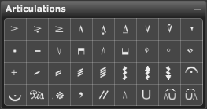

Palette Overview

The following describes each of the tools in the Articulations palette:
- Accent - Extra emphasis placed on a note.
- Accent Dot - Extra emphasis placed on a note but shorter duration.
- Heavy Attack/Full Duration - Use this symbol for very strong, full duration accents. This is stronger than Sforzando w/staccato.
- Marcato - Use this symbol for moderate accents. This is stronger than a Staccatissimo.
- Marcato with staccato - Use this symbol for short, moderate accents.
- Heavier Marcato. Use this symbol for strong short, moderate accents.
- Marcato Inverted. Like a Marcato but inverted.
- Marcato with staccato Inverted. Like a Marcato with staccato but inverted.
- Staccato - Use this symbol to indicate a short, light accent.
- Tenuto - Use this symbol to indicate a pressure accent.
- Up Bow - Use this symbol in string notation to indicate up bow.
- Down Bow - Use this symbol in string notation to indicate down bow.
- Up Bow Inverted - This symbol has the same effect as the Up Bow, but is used below notes.
- Down Bow Inverted - This symbol has the same effect as the Down Bow, but is used below notes
- Natural Harmonic - Use this symbol to indicate that the note is to be played as a natural harmonic.
- Artificial Harmonic - Use this symbol to indicate that the note is to be played as an artificial harmonic. changing nut position with the first finger while holding harmonic with the fourth finger.
- Plus - Use this symbol with different instruments to indicate different articulation effects. For example, use this symbol with woodwinds to indicate notes are to be played with a key click; use it with brass to indicate hand stopping; use it with strings to indicate pizzicato notes played with the left hand; or use it in jazz scores to indicate a du.
- Tremolo 1 - If indicating a measured tremolo, place this symbol on a note to indicate an eighth note tremolo. If indicating an unmeasured tremolo, use this symbol to indicate a tremolo in a very fast passages.
- Tremolo 2 - If indicating a measured tremolo, place this symbol on a note to indicate a sixteenth note tremolo. If indicating an unmeasured tremolo, use this symbol to indicate a tremolo in a fast passage.
- Tremolo 3 - If indicating a measured tremolo, place this symbol on a note to indicate a thirty-second note tremolo. If indicating an unmeasured tremolo, use this symbol to indicate a tremolo in a moderate tempo passage.
- Tremolo 4 - If indicating a measured tremolo, place this symbol on a note to indicate a sixty-fourth note tremolo. If indicating an unmeasured tremolo, use this symbol to indicate a tremolo in a slow passage.
- Arpeggio - Use this symbol next to a chord to indicate an arpeggio.
- Arpeggio Up - Use this symbol next to a chord to indicate an arpeggio that is played from bottom to top.
- Arpeggio Down - Use this symbol next to a chord to indicate an arpeggio that is played from top to bottom.
- Fermata. Use this symbol to indicate a long held note or a long pause. You can also double-click any Fermata symbol that is not attached to a note, to open the Fermata Settings dialog box.
- Inverted Fermata. This symbol has the same effect as a Fermata, but is used below notes. You can also double-click any Fermata symbol that is not attached to a note, to open the Fermata Settings dialog box.
- Down Pedal. Use this symbol in piano notation to mark the depression of the damper pedal.
- Up Pedal. Use this symbol in piano notation to mark the release of the damper pedal.
- Pause (Comma). Use this symbol to indicate a very brief pause (such as the length of a breath).
- Grand Pause (Caesura). Use this symbol to indicate a pause at the end of a long phrase or section. This marking indicates a longer pause than a comma. Convention dictates that you always place a pause through the top space of a staff.
- Toe Pedal. Use this symbol in organ notation to indicate use of the toe.
- Heel Pedal. Use this symbol in organ notation to indicate use of the heel.
- Toe to Heel Pedal. Use this symbol in organ notation to indicate switching from toe to heel.
- Heel to Toe Pedal. Use this symbol in organ notation to indicate switching from heel to toe.
NOTE: To define how an articulation affects MIDI playback double-click on the symbol to open the Articulation Playback dialog box. The default settings for each track are found in the Track Inspector Panel dialog.
For more information, see:
Using the Articulations Palette
Using the Arpeggio Tool
Using the Tremolo Tools
Using the Pause Tool